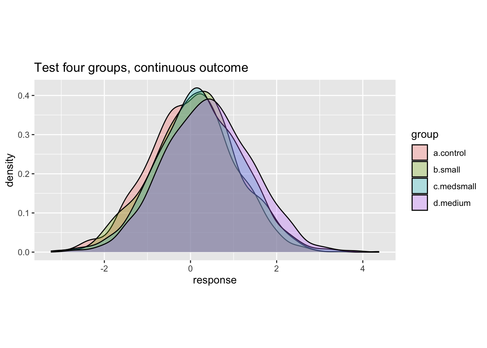
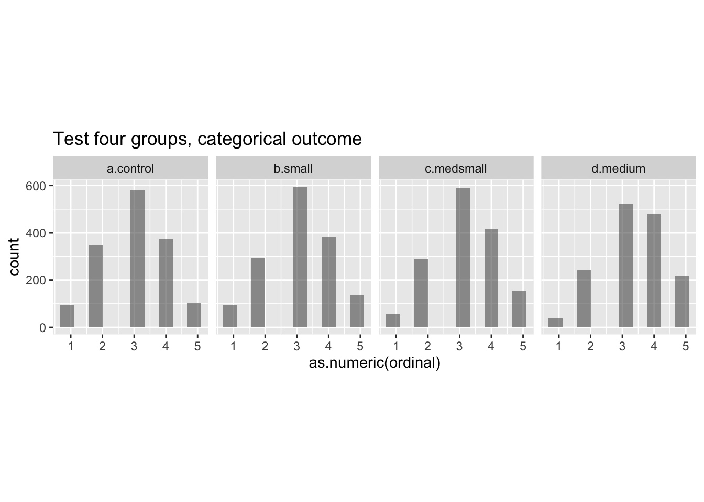

[1] Inf8 Discussion and framework
m# Power analysis & workflow {#power-workflow} [^power_analysis_framework_2-1] [^power_analysis_framework_2-1]: By Jamie Elsey, adapted and extended by David Reinstein.
Introduction and goals
We propose the fundamentals for a workflow for power analyses, beginning with a standard frequentist analysis.[^power_analysis_framework_2-2] [^power_analysis_framework_2-2]: Although this started from a Bayesian paradigm, the overarching framework is applicable to any analytic approach. Starting frequentist will make the code easier to run as well. Note that as Bayesian power analyses can be very time consuming (at the moment/with our current setup), in some cases even if you ultimately might perform a Bayesian analysis, it may make some sense to run frequentist approaches first. In many cases the estimates from Bayesian and frequentist approaches will tend to converge. I (Jamie) suspect general estimates from frequentist approaches would be quite similar to those of Bayesian approaches, if the goal of the analysis (what you want to make an inference about) is the same. I will make an accompanying document with an example of a Bayesian power analysis that should be computationally feasible to accompany this. The general approach laid out here can be the basis for developing and build a library of common analyses and inference goals.
Helpful future additions to the toolkit would include
clear and flexible ways to generate hypothetical data sets, and
adding further analytic designs.
DR: I think tools like DeclareDesign can help with this.
This is not intended as an exhaustive introduction to the fundamentals of statistical power–I assume you are reasonably well-versed in some general principles of statistical inference and hypothesis testing, as well as in the basic idea of what power analysis is.1
We will focus solely on ‘simulation-based’ power analysis,2 and not on ways of mathematically (analytically) deriving power.
Definition of power
In frequentist null hypothesis significance testing (NHST), power is typically defined as ‘the probability that we can reject the null hypothesis, if the alternative hypothesis is indeed true’ (i.e., power is the ‘true positive rate’). More precisely, we may express this as ‘power against a particular alternative hypothesis’.
Wikipedia: The statistical power of a binary hypothesis test…
The statistical power of a binary hypothesis test is the probability that the test correctly rejects the null hypothesis \(H_0\) when a specific alternative hypothesis \(H_{1}\) is true. It is commonly denoted by \(1-\beta\), and represents the chances of a “true positive” detection conditional on the actual existence of an effect to detect. … as the power of a test increases, the probability \(\beta\) of making a type II error by wrongly failing to reject the null hypothesis decreases.
However some Bayesians question this
Some Bayesian statisticians question the validity and usefulness of this presentation of power analysis. This engages deep issues in the conception of probability. From the frequentist perspective you imagine a fixed underlying true parameter and consider the many data sets that might hypothetically arise from it - ‘the true parameter is fixed and the data varies’.
In Bayesian reasoning you note that you have ‘uncertainty about the underlying parameter’ but you consider the data as fixed. A Bayesian approach does not tend to consider ‘the probability that the data arises in a particular way under a null hypothesis’; however ‘Bayesian hypothesis testing’ is discussed in the literature. (Presumably, it envisions ‘rejecting a hypothesis’ where the posterior probability that the hypothesis holds is sufficiently small).
Before we conduct an experiment (or run a survey, or collect data for an analysis), there are many hypothetical future data sets we might observe. Whether we favor a frequentist or Bayesian approach, it seems reasonable to ask:
Given the range of data that I might observe, how likely is it that I can make certain conclusions?.
We can broaden the idea of power to indicate the probability that our proposed sample yields information that allows us to make some specific kind of inference about the data-generating process.4 Given a particular underlying effect (or range of effects, or lack thereof), and a particular sample size (or range of sample sizes), we may ask ‘what is the probability of’… ?:5
- ‘determining’ that there is a non-zero difference between two conditions,6
- detecting some ‘smallest effect size of interest’,
- a ‘false positive’,7
- achieving a desired level of precision around a particular parameter estimate, or
- finding an effect ‘likely equivalent to zero’ or ‘unlikely to be far from zero’.8
‘Power of an equivalence test’ (key aside)
We may wish to estimate the ‘likelihood that we will determine that the effect is in a near-zero range’, when the true effect size is in fact zero or very small. This is called an ‘equivalence test’; thus we may want to compute the ‘power of an equivalence test given a particular distribution of true effect sizes’. I’ll call the latter the ‘equivalence distribution’ for now.
- Determine the equivalence bounds of interest … the lower and higher bounds of ‘an effect close to zero’
- Determine how we wish to compute our equivalence test (e.g., the ‘two one-sided t-tests’ advocated by Lakens) given these equivalence bounds
- Set the ‘equivalence distribution’
- Simulate a large number of data sets arising under the equivalence distribution. (DR: in practice I think this is often stated as an exact zero effect, but this might be naive.)
- Compute the equivalence test for each simulated data set.
- Count the share of these that ‘determine the effect is near zero’. This share is the ‘power of our equivalence test against the equivalence distribution’
See: One code example of this here using resampling from previous comparable data, password required (ask David Reinstein), search for the equiv_data function and its use in the code.
Hence, a power analysis helps frame our prospective research project in relation to the goals we would like to achieve.9 It provides us with an estimate (and it is indeed an estimate, not a certainty!) of the probability that we will be able to make the inference we wish to make, given various factors both inside and outside of our control. (See discussion in fold.)
What is ‘in our control’?
We might think of sample size as in our control, which it generally is, but this is typically limited by practical considerations outside of our control (such as the availability of a sample or financial constraints). Conversely, effect size is often considered out of our control; however we can sometimes increase the ‘dosage’ we give, or try to select a particular group of participants who might be particularly susceptible to our effect of interest.
General workflow for simulation-based power analysis
Simulation-based power analysis proceeds in four primary steps:
- Generate a large number of ‘simulated data sets’ for the analysis.10
We generate data sets generated to be specific to the study’s goal. E.g., suppose we want to know the ‘power to detect an effect size of 0.2 SD’.11 Here, for considering the true positive and false negative rates, we should generate data that reflects this effect size. If we also want to measure the rate of type-2 error12 we should also generate data reflecting a ‘null effect’.
Run the proposed analysis over the many simulated data sets. (Do this as efficiently as possible, as it can take a long time.) This analysis should either return the estimand of interest, or ensure that we can easily compute it (in Step 3). The output should be kept as flexible as possible (while conserving computer memory). This will allow us to assess multiple inference goals on the same output.13
Summarize the output returned in Step 2. Compute the share of simulated data sets that meet particular inference goals or decision criteria. (Example described in fold)
Example: a simple case of simulating data to measure power
E.g., we might simulate 1000 data sets based on an effect size of 0.3 standard deviations and perform a standard t-test of the difference between treatment and control for each of these. We might then find that for 743 of 1000 of these simulated data, the test ‘rejected the null hypothesis’, suggesting a power of 74.3%.
This can show the likelihood of achieving a range of goals (under various sample sizes and design and testing choices) including the rates of misleading conclusions. In frequentist analyses, steps 2 and 3 can often be done together (e.g., the p-value is returned along with the other output). In my experience (JE) with typical Bayesian designs, these stages are best kept separate so that we can first do the more time-consuming Step 2, and then more freely explore the various inference goals in Step 3.
- Assess the output and determine whether the proposed analyses and inference goals are realistic and likely to yield informative results. If not, consider alternative design or data-collection choices (including sample sizes, treatments, and treatment assignments) or inference goals, and return to Step 1.14
Computing and optimizing across a design space
Typically, we are doing this exercise to diagnose the “best design” given our constraints15, or to consider whether any trial is worth doing at all. The procedure above diagnoses a particular design, and it could be iterated across a range of designs until you find the reasonably best one. However, you may be able to assess a range of designs at once with a cleverly coded set of simulations. Even in the exercise below, When you run simulations for a “large” sample size, you will be able to also compute the power and other diagnosands for a smaller sample size. More generally, you may want to 1. Defined the space of designs you wish to explore, and 2. ask your code to produce simulations for all of these at the same time, 3. compute and display the power (etc.) across this space of designs, and finally 4. search this space for the ‘best’ design by some criterion. (DR: I’m working onthis approach here, ask me for the password.)
In the following sections, we present some generally useful packages and functions for power analyses. We give annotated code examples, highlighting useful aspects. We do this in the context of a frequentist power analysis for between-groups analysis.16
[^power_analysis_framework_2-19] [^power_analysis_framework_2-19]: Willem has some nice procedures for generating repeated-measures data in his walkthrough, see also his ‘power curves’ using the library MASS.
‘But I want to know what size affect I have power to detect?’
Instead of computing the power to detect in effect of a certain size, it can sometimes be more informative to understand the ‘smallest effect size you have a certain (e.g., 80%) power to detect. This is called ’inverting the calculation’. My impression (DR) is that this is more difficult To-do through simulation, although some packages do offer this option.
Possible pitfalls/misunderstandings of power analysis
Power analyses are a useful tool for considering the basic plausibility of achieving certain goals. But they are not an ‘omniscient oracle’, and may be somewhat of a blunt instrument. They might better be termed ‘power projections’ or ‘power estimates’. Even if we estimate that we have 99.9% power for detecting some a particular effect, we may have specified our simulations in an unrealistic way. When we actually run an experiment, we might see (e.g.) far more underlying variation or measurement error than we predicted, leading our analyses to be fairly uninformative. Conversely, we might be overly conservative with our power analysis; perhaps a design we thought was ‘underpowered’ actually has a high probability of producing very compelling results.
Considering: when can power analyses be helpful? and when can they be limited
Intricate data exploration versus broad inference
When we see real data and real interesting patterns emerge, we are likely to go further in modeling and investigating these patterns than some of the more simple analyses and comparisons we conduct in the initial power analysis. I suspect power analyses are not so good for determining all the intricate, in-depth things we might plumb in a dataset. They are probably better at assessing the tractability of a broad inference goal.
Complex models, forking paths, and tractibility
We might want to give some consideration to how far we wish to go in the initial data simulation step to think about all sorts of hypothetical data sets. As models become more complex, the number of different parameters that might vary - with possible effects on power - starts to balloon. E.g., even in a simple repeated-measures example, do we wish to vary not only the effect size but all sorts of different correlations from pre- to post-treatment within subjects? If we are simulating ordinal data, then power might change depending on how we initially suggest binning the outcomes, but there are infinitely many ways we might think the data might look… Discussion and consideration of how far we should go with these things is welcome and could be useful! (DR: I’m not sure what you are getting at here. Are you saying that ‘the space of designs and proposed analyses we can explore is extremely large, and we may need to make some ad-hoc choices to avoid this getting unmanageable’?)
What ‘effect size’? Not ‘the effect size you are seeing so far’
To do a single power calculation you have to specify an effect size (or a distribution). What effect size should you choose?
Researchers have been known to collect a small amount of data and measure the area of fact they seem to be observing, and then use this for their power calculations. IMHO (DR) this is misguided. The effect size you compute in a small sample clearly may not be the true effect size (otherwise what’s the point in doing statistical inference?). Even if this is the most likely effect size it does not justify why you would want to design your experiment to have the right amount of power to detect this particular sized effect.
Another approach is to power it based on the ‘smallest effect size of interest’ (SESOI) and there is some discussion of this in the methods literature. This might be interpreted based on the notion that if we are powered to detect such a small effect size and we failed to detect it we might say ‘ok there is no meaningful effect’. But this is not quite right; to make such statistical conclusions you would have to do an equivalence test, and thus you would focus your power calculation on that. Perhaps a better justification for targeting a SESOI is based on a loose ‘value of information approach’: we should use our funds to detect ‘interesting effects’; if any effect is below this, it’s not worth spending the money to detect. But this just pushes the question backwards, and forces us to consider the cost and benefits of collecting data.
We discussed the explicit ‘value of information’ (VOI) calculation for trial design here.
8.1 Concrete implementation of framework
Step 1: Generate a large number of data sets for the analysis
Confirm that we can generate the basic data we want
In many simulations we end up generating some rather large data files: thus, we first increase the memory limit allotted to R.17
Now we want to generate a hypothetical data set. In this case, we will be comparing four groups, each shown a different message in a between-subjects design (three active groups vs. a control condition with a neutral message).
In this example, the ‘different groups’ in our design play a second role in helping us assess our power against several different possible effect sizes.18
Code: The four.group.datamaker function creates a tibble (data frame) of
- a (std) normally distributed outcome
- an ordinal categorization of this outcome
- with four groups, each with (potentially) different outcome means
- with
ppgrows per group - with defaults as described
Code
four.group.datamaker <- function(sim = 1, a = 0, b = .1, c = .2, d = .4, ppg=1500) {
#DR I renamed it `ppg` for 'population per group' because `pop` confused me
# first a tibble (data frame) with 1500 ppts, with the different groups showing
# effect sizes in Cohen's d of .1, .2, and .4
four.groups <- tibble(a.control = rnorm(ppg, a, 1),
b.small = rnorm(ppg, b, 1),
c.medsmall = rnorm(ppg, c, 1),
d.medium = rnorm(ppg, d, 1),
counter = 1:ppg) %>% #we previously called the counter 'sample.size' because of its later use
# turn the data into long form
pivot_longer(cols = 'a.control':'d.medium', names_to = 'group', values_to = 'response') %>%
# put cutpoints in the data to make it more similar to the ordinal responses we would get
mutate(ordinal = case_when(response < -1.5 ~ 1,
response < -.5 ~ 2,
response < .5 ~ 3,
response < 1.5 ~ 4,
response >= 1.5 ~ 5),
# for the purposes of this demo we will not analyse it as ordinal as it takes longer
# to run the regressions, but if you did so you would also want to make the response
# a factor
ordinal = as.factor(ordinal),
sim = sim)
return(four.groups)
}We plot the data generated in one instance, to check our code and setup:
Code
# test that the function works to make one data set before making many!
test.data <- four.group.datamaker()
ggplot(data = test.data) +
geom_density(aes(x = response, fill = group), alpha = .3) +
theme(
aspect.ratio = .5
) +
ggtitle('Test four groups, continuous outcome')
Code
ggplot(data = test.data) +
geom_histogram(aes(x = as.numeric(ordinal)), alpha = .6,
position = position_dodge(), bins = 10) +
facet_wrap(~group, nrow=1) +
theme(
aspect.ratio = 1
) +
ggtitle('Test four groups, categorical outcome')
We can see from the plots that the function appears to be working. When developing a data set for the first time, one would usually go further with some ‘diagnostic’ checks to confirm that the data is behaving as you intended.19
Efficiently generate many data sets
Now we just need to run the function above many times over. This could be done using loops, but a very useful set of R functions in the tidyverse is the purrr package of map functions. Even better, a package called furrr is available to run such map functions in parallel to further reduce time.20 For furrr to do this, we need to tell it to plan for ‘multisession’, and give it a seed in the code below. 21
Code
p_load(furrr)
library(furrr)
plan(multisession)
options <- furrr_options(seed = 48238)Code: We map over all 500 elements of the vector nsims to create 500 simulated data sets.22
Code
# we will pass N = 500 simulations to the map function
nsims <- 1:500
# the map function will run our data-making function over nsims=500 simulations
sim.data <- furrr::future_map_dfr(
.x = nsims,
.f = four.group.datamaker,
a = 0,
b = .1,
c = .2,
d = .4,
.options = options
)
# split the simulated data into the separate simulations
sim.data <- sim.data %>% group_by(sim) %>% group_split()Now, we have 500 simulated data sets representing our hypothetical outcome data, and can perform analyses on them. Here’s a peek at part of one of these data sets, the third simulation:
Code
head(sim.data[[3]])| counter | group | response | ordinal | sim |
|---|---|---|---|---|
| 1 | a.control | -0.395 | 3 | 3 |
| 1 | b.small | -0.396 | 3 | 3 |
| 1 | c.medsmall | -0.0762 | 3 | 3 |
| 1 | d.medium | 0.994 | 4 | 3 |
| 2 | a.control | -0.931 | 2 | 3 |
| 2 | b.small | -1.58 | 1 | 3 |
Step 2: Run the proposed analysis over the many data sets and return the estimands of interest
Before we run an analysis over the many simulated data sets, we should to check that our models can run on these, and that they will return the estimands we are looking for.
For a Bayesian analysis
There are a range of estimands we might care about, depending on our estimation and inference goals. For example, we might consider returning a p-value, or the upper and lower bounds for confidence intervals, or R-squared estimates, etc. The key point: before you drop the large set of simulated data sets and the regression results for each, make sure you every estimated that might be of interest; you don’t want to have to to re-run the entire analysis.
In addition, you want to run the analysis on different sample sizes of the data, to generate a power curve plot. I.e., a plot showing how your power increases as you increase the sample size.
In the example function below, we run a simple linear regression, predicting the response from group.
Code
linear.reg.maker <- function(data, breaks) { #runs a particular regression over a set of cuts of larger and larger subsets of multiple data sets
# this function cuts the data set it is given into different sample sizes
cut.samples <- function(break.point, data) {
cut.data <- filter(data, counter <= break.point) %>%
mutate(sample.size = break.point)
return(cut.data)
}
data.cuts <- map_dfr(.x = breaks, .f = cut.samples, data = data)
# the data is split according to the sample size
# to feed to the regression model
data.cuts <- data.cuts %>% group_by(sample.size) %>% group_split()
# this function runs the regression
run.reg <- function(data) {
four.group.form <- as.numeric(ordinal) ~ 1 + group
four.group.reg <-
lm(formula = four.group.form,
data = data)
# we extract confidence intervals for the parameters of interest
ci99 <- confint(four.group.reg, level = .99)
ci95 <- confint(four.group.reg, level = .95)
# we create an 'output' to show the confidence intervals around the effects
# and some additional inference info, e.g., 'nonzero' indicates whether
# the lower bound of the CI excludes 0 or not.
# 'width' indicates the width of the confidence interval,
# for assessment of precision
output <- tibble(group = c('small', 'medsmall', 'medium',
'small', 'medsmall', 'medium'),
interval = c(.99, .99, .99, .95, .95, .95),
lower = c(ci99[[2,1]], ci99[[3,1]], ci99[[4,1]],
ci95[[2,1]], ci95[[3,1]], ci95[[4,1]]),
upper = c(ci99[[2,2]], ci99[[3,2]], ci99[[4,2]],
ci95[[2,2]], ci95[[3,2]], ci95[[4,2]])) %>%
#DR: maybe this code should be made a little more flexible?; because if you wanted to consider additional-sized effects you would need to expand the entries above
mutate('nonzero' = case_when(lower > 0 ~ 1,
TRUE ~ 0),
'width' = abs(upper - lower),
'sim' = data[[1, 'sim']],
'cell.size' = nrow(data)/4)
return(output)
}
# run the regression function over the different sample sizes
output <- map_df(.x = data.cuts, .f = run.reg)
return(output)
}Once we have made and tested that our function works as intended and returns the values we want to make inferences from, we can run it over the many simulated data sets:
Code
t1 <- Sys.time()
linreg.output <- future_map_dfr(.x = sim.data,
.f = linear.reg.maker,
breaks = seq(from = 150, to = 1500, by = 150))
t2 <- Sys.time()
t2 - t1Time difference of 17.46804 secsThe object linreg.output is now a large dataframe, cataloguing whether or not certain inference thresholds were reached across the many simulations. In the third primary step, we can summarise and graphically display this information.
Step 3: Summarise the output returned in Step 2 to determine the likelihood of achieving various inferential goals
Now, we want to know how likely we are to achieve a range of inferential goals, depending on factors such as the sample size, the underlying effect sizes, or anything else we varied in simulating our data and running our models. For this example, this is as simple as generating a summary of the output from Step 2… 25
Code
# group the data according to group, confidence interval, and size per group
four.group.lin.summary <- linreg.output %>% group_by(group, interval, cell.size) %>%
# summarise the amount of times we get a CI greater than 0
summarise(.groups = 'keep',
'ci above 0 vs. control' = sum(nonzero)/5) %>%
# change some factors for plotting
mutate(interval = factor(interval, levels = c('0.95', '0.99'),
labels = c('95% CI', '99% CI')),
'Effect size' = factor(group, levels = c('small', 'medsmall', 'medium'),
labels = c('Very small (.1)', 'Small (.2)', 'Medium (.4)')))A… and then plotting the resulting power curve:
Code
(
power_curve_4_group_lin <- ggplot(data = four.group.lin.summary) +
scale_x_continuous(limits = c(100, 1550), breaks = seq(from = 150, to = 1500, by = 150)) +
scale_y_continuous(limits = c(0, 100), breaks = seq(from = 0, to = 100, by = 20)) +
geom_hline(aes(yintercept = 80), linetype = 'dashed', size = .33, alpha = .25) +
geom_hline(aes(yintercept = 90), linetype = 'dashed', size = .33, alpha = .25) +
geom_path(aes(x = cell.size, y = `ci above 0 vs. control`, color = `Effect size`,
group = `Effect size`), size = .66) +
geom_point(aes(x = cell.size, y = `ci above 0 vs. control`, color = `Effect size`),
size = 1.5) +
labs(y = 'Power to detect a non-zero effect',
x = 'Number of participants per condition (control group not included)') +
scale_color_manual(values = c('#c10d0d', '#7dc3c2', '#dcc55b')) +
facet_wrap(~interval) +
theme(
aspect.ratio = 1,
panel.grid.major = element_line(colour = "white", size = 0.33),
panel.grid.minor = element_line(colour = "white", size = 0.2),
panel.background = element_rect(fill = "grey96"),
axis.line = element_line(color = 'black', size = 0.375),
axis.ticks = element_line(color = 'black', size = 0.5),
text = element_text(color = 'black', family = 'Gill Sans MT', size = 9),
axis.text = element_text(color = 'black', family = 'Gill Sans MT', size = 7),
strip.background = element_blank()
)
)Step 4. Assess the output and determine whether the proposed analyses and inference goals are realistic and likely to yield informative results.
In Step 4, we use the information we have generated above to make substantive conclusions about the projected power of our experiment to detect particular effects, given particular underlying parameters. From this we can make recommendations as to experimental design.
Based on the power curve plotted above, we can conclude that we would have a very high likelihood of detecting effects of .4 versus a control group at even quite low sample sizes, and also a good possibility of detecting effect sizes of .2 at quite modest sample sizes. On the other hand, for the very small effect size, we would not be likely to detect a difference from a control group even with 1500 participants per group. If effect sizes of this sizes are of interest, then we might consider going back to Step 1 and reconsidering our experimental design to include more participants.
DR: We can cover this in the earlier section, or link relevant explanations.↩︎
Essentially, we draw many hypothetical versions of a data set with certain properties under certain conditions, compute our estimates and tests, and tally ‘how often’ it yields certain results.↩︎
-
The conclusion or inference one wishes to make from a data set can go far beyond simply saying something like “there is a non-zero difference between groups” (although this is probably the most common inference people first consider). Or a comparable statement posed in probabilistic terms…
Frequentist: ‘if there had been a zero difference between these groups (H0), this data is unlikely to have been generated’.
Bayesian: ‘the posterior distribution puts most of the probability mass on there being a difference between groups greater than (some moderate amount).’↩︎
These are examples of ‘diagnosands’ in the terminology of the DeclareDesign package.↩︎
Note that these could all be either Bayesian or frequentist, depending on how you specify your goals/inferences.↩︎
-
‘Determining’ is in scare quotes; ultimately, we are making probabilistic statements about…
the ‘true effect size’ (‘we make the decision that, most probably, there is a non-zero difference’) or
about the likelihood of observing data like this under some conditions (frequentist: ‘this data would be very unlikely if there were a zero effect’).
I.e., the probability of concluding that there is a difference between groups when in fact there is no difference (the standard ‘Type 1 error’, aka the ‘size’ of a test).↩︎
-
This is sometimes called ‘equivalence testing’. In Bayesian estimation, you can consider a ‘range of practical equivalence’ (ROPE). Here, if a large enough proportion of the posterior (of the difference between two groups, say) falls in this range, you conclude that ‘to all intents and purposes these groups are equivalent.’
See the ‘diagnosands’ of the
declaredesignframework.↩︎These may be generated by draws based on a canonical distribution, like the Gaussian (‘normal’) with particular parameters. Alternately, if prior ‘similar’ data is available (e.g., from outcomes in the year prior to a field experiment), we may prefer to generate it by resampling from this.↩︎
I.e., the power of a particular design and testing procedure…↩︎
I.e., the rate of false positives, i.e., if the null, e.g., an effect side of 0, holds.↩︎
E.g., in a Bayesian analysis, we can generate the full posterior distribution for an analysis. This can then be assessed and summarised in many ways in step 3.↩︎
We don’t refer to this as ‘new ways of generating data’ because… It seems wrong to first say, e.g., ‘we assumed the a standard normal distribution of outcomes with a standard deviation equal to that observed in prior trials’… and then say ‘but that didn’t have enough power so let’s assume a more concentrated distribution’. What we mean is to consider other ways of actually collecting data or setting up the experiment that would lead to a reasonable expectation of a different data generating process, and then simulate and diagnose this new approach. Note that DD seems to have good tools for comparing and considering design variations. Of course, there might also be a time to ‘know when to fold-em’.↩︎
Or assess the cost/benefit of relaxing these constraints; again see the Value of Information↩︎
We give this example is primarily because between-groups (aka ‘between-subject’) analyses run much more quickly than within- subjects analyses. Thus, these can be run without a time wasting headache on your own computer! We hope to add (and link or connect) further examples of common designs in future.↩︎
I don’t believe there is any real cost to increasing this memory limit, so it is wise to do so as to avoid a function iterating many times over for a long time, but ending up without sufficient space to store the outcome. DR: There must be some cost, otherwise why wouldn’t it be a default? I guess it depends on the system/hardware.↩︎
We can put these into a multiple regression and assess whether these different effect sizes ‘come out as significantly different from our control group’. Thus we can diagnose our power to detect different sizes of effects.↩︎
For example, in Willem’s examples, he used the
mvnormfunction with'empirical = TRUE'to inspect the data being generated with the exact mean-differences specified. This can then be confirmed with descriptive statistics. You are testing whether your ‘parameters make sense’. Naturally, you turn offempirical = TRUEwhen actually running.↩︎This doesn’t matter so much here because this will be quite quick anyway, but is important when we run the analyses over the many data sets.↩︎
DR: I don’t think we need to give it a seed, but it’s a good practice↩︎
future_map_dfrworks just likemap_dfr, but enabling parallelization. It ‘returns a data frame generated by row-binding.’ (DR: this took about 4 seconds to run on my M1 Mac.) If we usedfuture_mapinstead, it would give us a list of 500 tibbles. But then we break it back up again into that list, I’m not sure why.↩︎e.g., estimates of every participant intercept, which take too much space for what they are worth↩︎
…Or simply the parameter estimate for the interaction. (DR: what interaction?) For Bayesian analyses I err on the side of getting as many of the main parameters as possible, because this is a very time-consuming step.↩︎
The code below groups the results by group (effect size), confidence interval, and sample size, summarizes the ’share of CI’s that don’t overlap zero, and cleans things a bit.↩︎